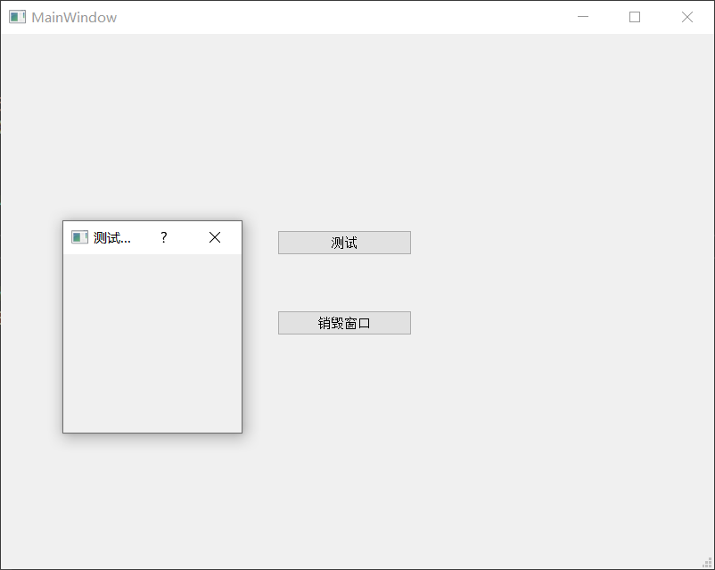
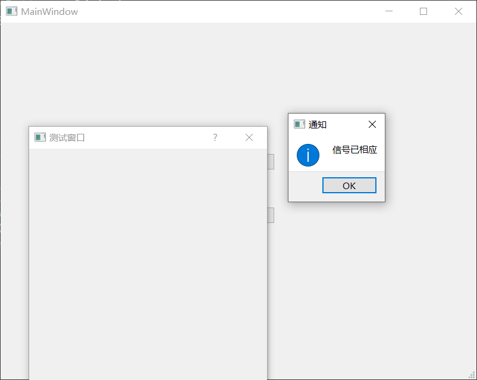

新式connect省略receiver导致崩溃的问题
问题 
有两个对话框MainWindow和测试，当点击MainWindow中的测试按钮时，测试窗口长宽变为400px，并弹出提示窗，如下所示：

当点击销毁窗口时，销毁测试窗口。
代码如下：
1 2 3 4 5 6 7 8 9 10 11 12 13 14 15 16 17 18 19 20 21 22 23 24 25 26 27 28 29 30 31 32 33 34 35 36 37 38 39 40 41 42 43 MainWindow::MainWindow(QWidget *parent)new Ui::MainWindow)this );new Dialog(this );u8"测试窗口" );200 , 200 );this , &MainWindow::senderButtonClicked);delete ui;static_cast <MainWindow*>(parentWidget()), &MainWindow::senderButtonClicked, [=]() {this ->setFixedSize(400 , 400 );nullptr , u8"通知" , u8"信号已相应" );
如果先点销毁，再点击测试，程序崩溃在this->setFixedSize(400, 400);行。
将代码改为如下：
1 2 3 4 5 6 7 8 9 Dialog::Dialog(QWidget* parent)static_cast <MainWindow*>(parentWidget()), &MainWindow::senderButtonClicked, this , [=]() {this ->setFixedSize(400 , 400 );nullptr , u8"通知" , u8"信号已相应" );
先点销毁，再点击测试，不会崩溃。
原因 查看Qt助手，disconnect中有如下说明
1 [static ] template <typename PointerToMemberFunction> bool QObject::disconnect (const QObject *sender, PointerToMemberFunction signal, const QObject *receiver, PointerToMemberFunction method)
A signal-slot connection is removed when either of the objects involved are destroyed.
如下所示新式connect重载：
1 [static ] template <typename PointerToMemberFunction, typename Functor> [QMetaObject::Connection](qmetaobject-connection.html) QObject::connect(const [QObject](qobject.html#QObject) **sender*, PointerToMemberFunction *signal*, Functor *functor*)
有如下说明：
The connection will automatically disconnect if the sender is destroyed. However, you should take care that any objects used within the functor are still alive when the signal is emitted.
对于如下所示旧式connect重载：
1 QMetaObject::Connection QObject::connect (const QObject *sender, const char *signal, const char *method, Qt::ConnectionType type = Qt::AutoConnection) const
有如下说明:
This function overloads connect().
Equivalent to connect(sender , signal , this, method , type ).
所以虽然都省略了receiver, 但是意义却不同。
对于形如：
1 [static ] template <typename PointerToMemberFunction, typename Functor> [QMetaObject::Connection](qmetaobject-connection.html) QObject::connect(const [QObject](qobject.html#QObject) **sender*, PointerToMemberFunction *signal*, Functor *functor*)
的新式connect函数，并不等同于省略了receiver, 只有当sender被destroyed时才会自动disconnect。所以需要保证lambda被调用时，其所捕获的对象还存在，否则就会崩溃。
解决
采用新式不省略receiver的connect函数。
disconnect(connection)其中QMetaObject::Connection connection = connect(........)